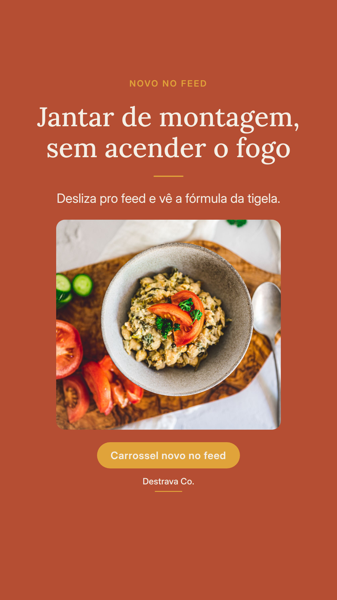
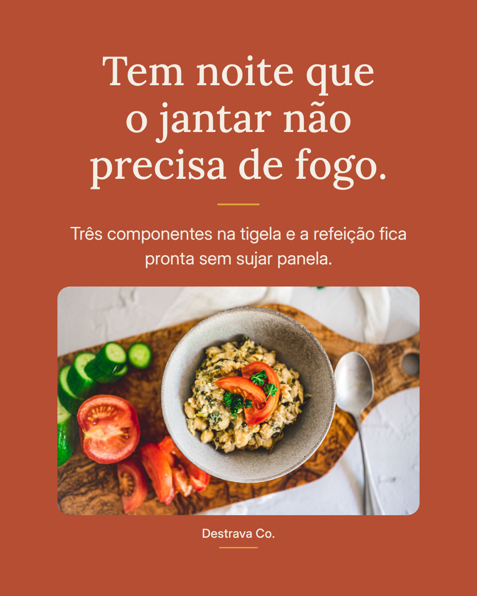
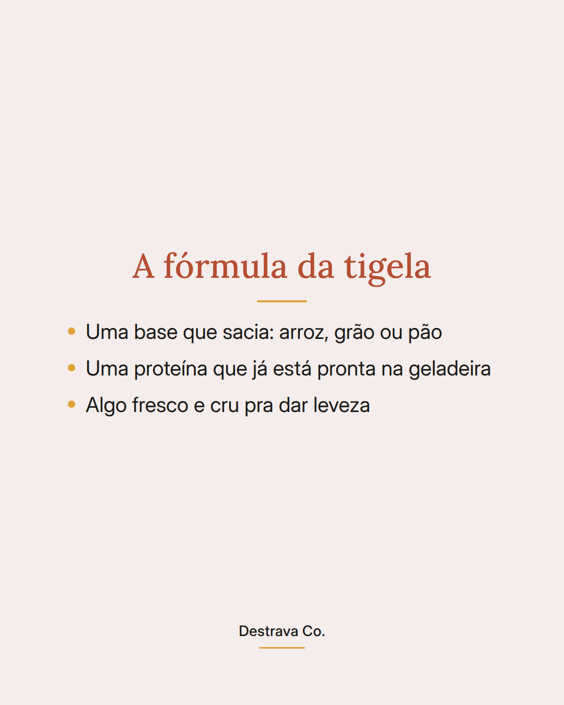
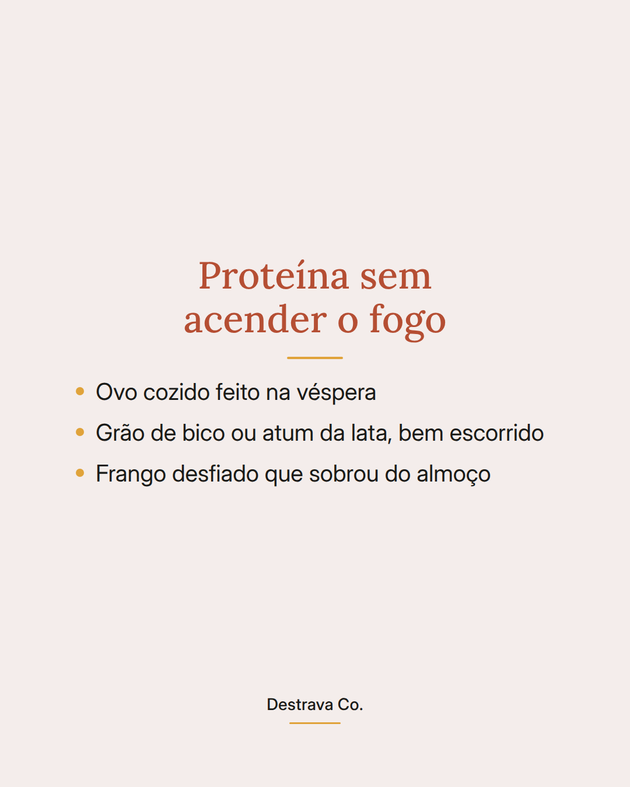
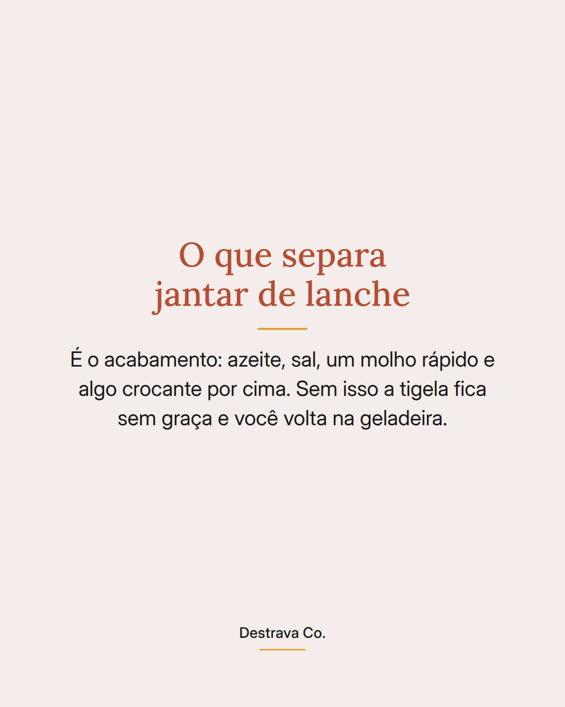
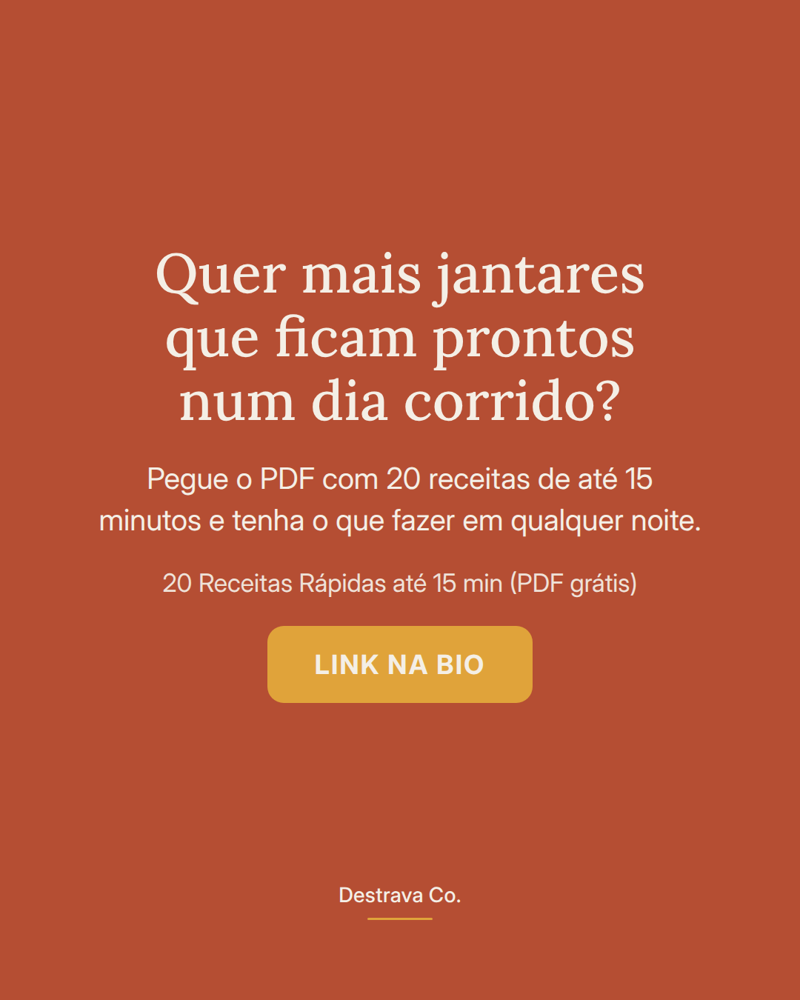

Jantar de montagem resolve a noite sem acender o fogo.
Três componentes na tigela e a refeição fica em pé em poucos minutos: uma base que sacia, uma proteína que já está pronta e algo fresco por cima.
Ovo cozido da véspera, grão de bico escorrido, frango desfiado do almoço. Tudo isso é proteína pronta esperando dentro da geladeira.
O que faz virar refeição de verdade é o acabamento: fio de azeite, sal, um molho rápido e algo crocante. É esse detalhe que separa jantar de lanche improvisado.
Salva pra lembrar no dia em que faltar energia pra cozinhar e manda pra quem também janta tarde. Se quiser mais ideias assim, o PDF com 20 receitas de até 15 minutos está esperando por você.